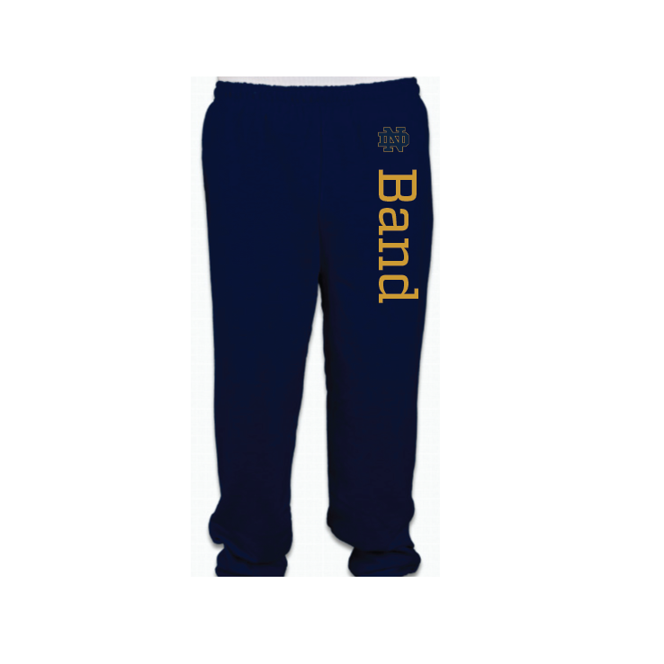

Band Clothing



These designs are created for the Band of the Fighting Irish. Each fall, the Band has a clothing order in which members of the Notre Dame Band can utilize their design skills and design apparel and other ND Band merchandise. This year, I had the opportunity to design multiple different clothing items, two of which were then selected to be sold to Notre Dame Band Members and their families and friends.
These shirts are mockups of shirts designed for the Community and Law Enforcement Relations Club of Notre Dame. A club started in 2018, this club promotes service to the community and a dedication to following the laws given to us by the government. This club was created for students intending to go into government positions upon graduation, such as in the law field or in the police force.